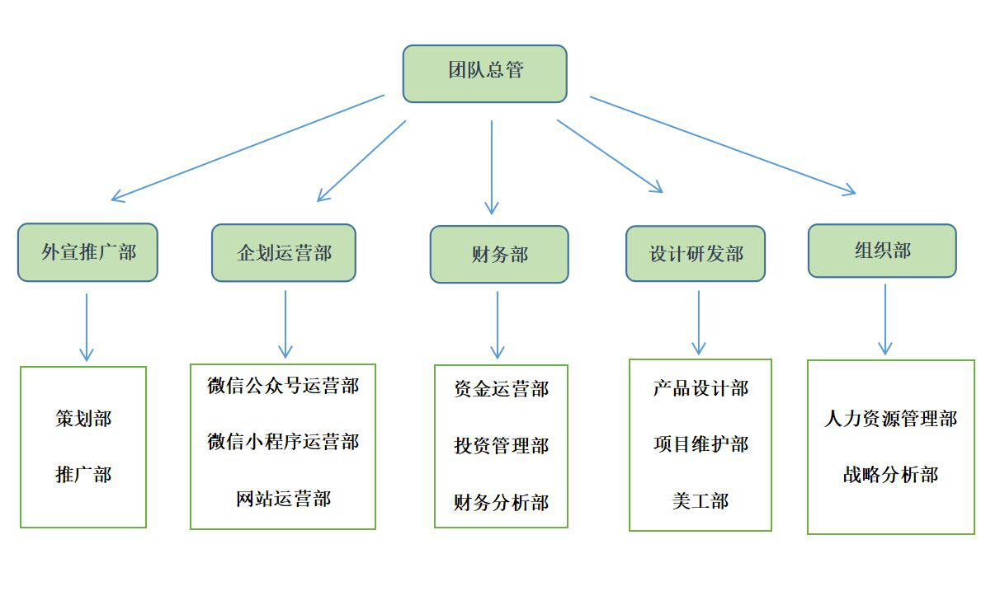

关于绿融
绿融的目标是为农村居民散户和城市居民消费者搭建一个平台，通过这个平台满足城市居民日益增长的消费需求和对健康生活的追求，也能够帮助农村散户将多余的有机果蔬卖出去，获得额外的收入，提升生活水平。此外，绿融团队还希望通过这个项目激发社会对农产品电商的关注，尤其是小规模“订单农业”；也希望这个项目能够很好地利用社会资源，减少有机蔬果的浪费。
绿融团队深谙团队内部文化打造的重要性,在发展过程中始终抓住“创”这个关键字，团队成员秉持“与时俱进、开拓创新”的理念和精神，不断创新产品和项目，开发出新的板块。绿融致力于成为一个具有创造力、执行力和生命力的团队，为农村和城市提供一个不断创新的果蔬绿色直供通道。
1.“创”团队团队成员从最开始的不熟悉到如今的协调融洽、默契十足，逐渐成为一支团结友爱、互帮互助、优势互补、责任共担的优质团队。团队负责人起到很好的带领作用，将坚持不懈、不断进取的优良品质灌输给团队成员，团队成员对项目充满热情和干劲，成员之间优势和技能互补，坦诚交流，团队项目高效运作。
2.“合”团队绿融团队秉持“高效”、“快捷”的精神，在短时间内构思了项目内容、项目发展方向以及产品开发，并在短时间内创立了绿融团队的微信公众号“绿融生活”，构建出绿融微信小程序以及官方网站。团队进行了多次会面，将团队的创意和构思以及后期规划做了简单、高效的沟通，致力于发展成为高效、优质、敏捷的团队。
3.“效”团队

团队组织结构
绿融团队目前有一个负责人，其他成员均为普通成员。团队下设外宣推广部、企划运营部、财务部、产品研发部、组织部等五个部门，每个部门下各设2-3个分部。其中，每个部门共有1-2名核心成员以及3-4名普通成员，团队的组织结构如左图所示